初识Dreamweaver工作界面
Dreamweaver CS6是一款可视化建立Web网页、站点和应用程序的专业编辑工具。
DW的工作界面由菜单、状态栏、编辑区域、丰富的面板组成。
预设的工作界面
| 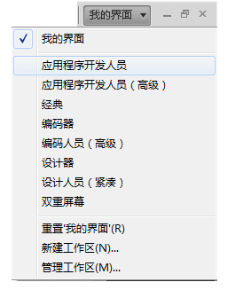 | 设计师可以根据自己的习惯切换工作环境：
…… |
常用面板
属性面板：最常用的设置面板，默认单独安排在窗口下方，可对当前选择的元素针对性地进行属性设置。
| 面板组一 | 面板组二 | 说明 |
| 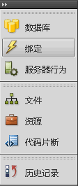 | 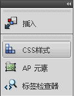
|
|
状态栏
- 左：当前元素相关的标签。
- 右：对编辑区的操作和当前文档的信息。
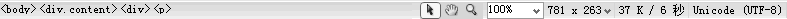
工作区域
- 各种视图：代码视图、拆分视图、设计视图、实时视图（实时代码）
- 标题设置
- 文件管理和浏览查看等

网页基本设定
文件->新建（HTML文件）页面属性
每个网页编辑的第一个标准步骤：更改网页的基本设定：
- 修改->页面属性（Ctrl+J）
- 属性面板->“页面属性”按钮
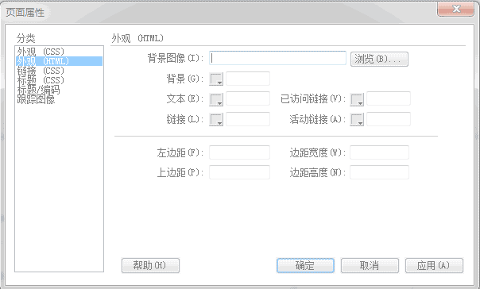 |
对应标签： background leftmargin |
| 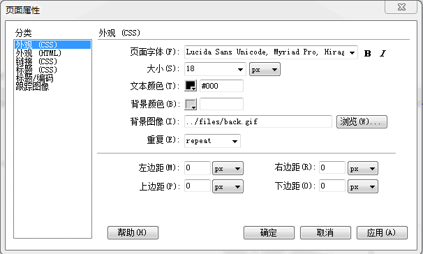 | 对应样式名： font-family margin-left |
- 背景色：一般选淡色。在没选背景图像或背景图像文件不存在（背景色作备用方案）时有效。
- 背景图：可配合“重复”（background-repeat）一起使用，重复时可贴满全屏。
- 边界留白设定 ：不满版，获取舒适的观感。
- 超链接的设定：未访问、已访问、活动链接。
网页的标题
- 直接在代码窗口中编辑设定
- 由“页面属性”窗口中的“标题/编码”分类中设定。
练习：为简历网页初始设置网页背景、边距、正文字体大小及颜色。

可视化布局排版
文字同一般的编辑器一样输入，在“属性框”中对文字格式进行修改。
段落和标题
输入文本后，可在属性框中进行设定是段落还是标题。
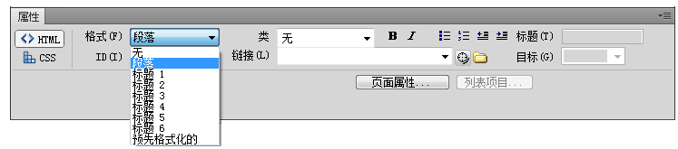
- 敲入Enter键，无格式文本自动转为段落。
- Ctrl+<n>：选定文本设为n级标题。（n:1~6）
- Shift+Enter：添加一个换行标签<br>，紧凑断行。
段落排版
- 段落对齐方式（操作：格式->对齐）
- 段落的缩进与凸出 （操作：属性面板或格式菜单）
- 段落的列表，包括项目列表（ul）、编号列表（ol）（操作：属性面板或格式菜单）
关于项目列表的符号可通过样式list-style-type和list-style-image设置。
<ul style="list-style-type:square">......</ul>
用表格布局页面
|
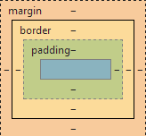 |
水平分隔线
- 插入->水平线
- 常用属性：宽（width）、高（height）、对齐、阴影等。
练习：设计内容翔实、条理清晰、格式简单的个人简历网页。参照

可视化设置超链接
页面内跳转链接
超级链接到其他网页
- 直接选择文本或图片
- 在属性面板的“链接”后文本框中输入完整的链接地址或选择链接页面
邮件链接
|
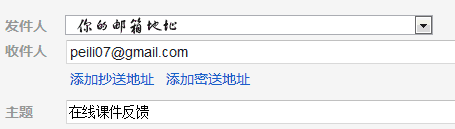 |
以下示例分别是网页超链接、锚记超链接和邮件超链接：
练习：仿制百度免责声明页。要求用表格布局，页面采用宋体字，字体尺寸参照实际网页。
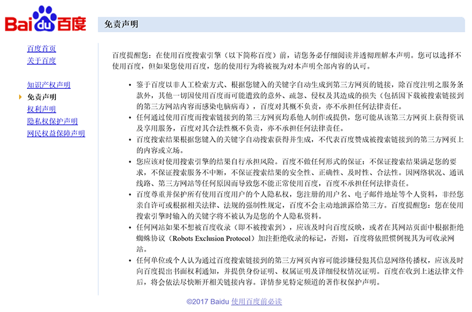

DW中常用的快捷键
界面操作快捷键
| 快捷键 | 功能 |
| F4 | 显示/隐藏面板组 |
| Ctrl+F3 | 显示/隐藏属性面板 |
| Ctrl+Alt+R | 显示/隐藏标尺 |
| Ctrl+Alt+G | 显示/隐藏网格 |
| Alt+F11 | 显示/隐藏实时视图 |
| Ctrl+Tab | 切换编辑文件 |
常用编辑快捷键
| 快捷键 | 功能 |
| Ctrl+Z | 撤消 |
| Ctrl+Y | 重做 |
| Ctrl+0 （数字） | 将当前行文本设为无格式文本 |
| Ctrl+n （数字1~6） | 将当前行文本设为标题n |
| Ctrl+Shift+P | 将当前行文本设为段落 |
| Ctrl+B | 所选文字加Strong标签（粗体） |
| Ctrl+I | 所选文字加em标签（斜体） |
文件操作快捷键

延伸练习与研究
网页临摹与设计
完成耶鲁计算系主页的网页临摹
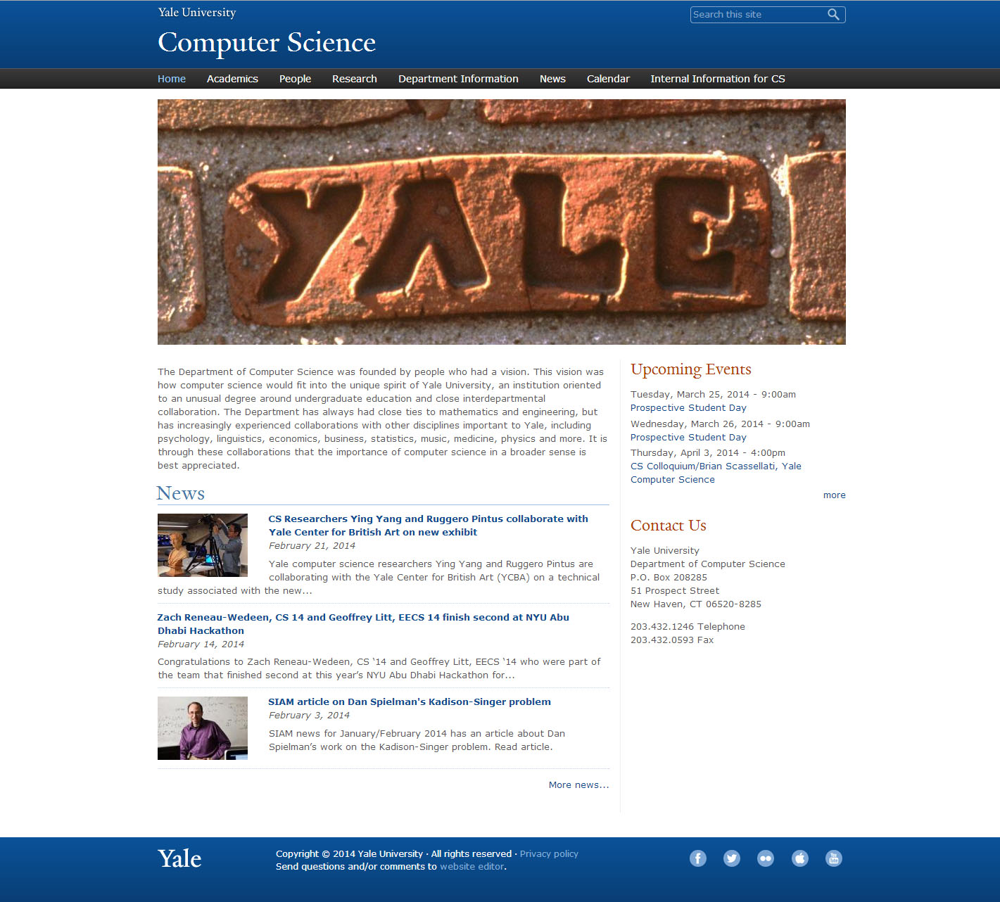
| Last | Home | Next |
©2012-2018 Yang Peili. All rights reserved. contact me